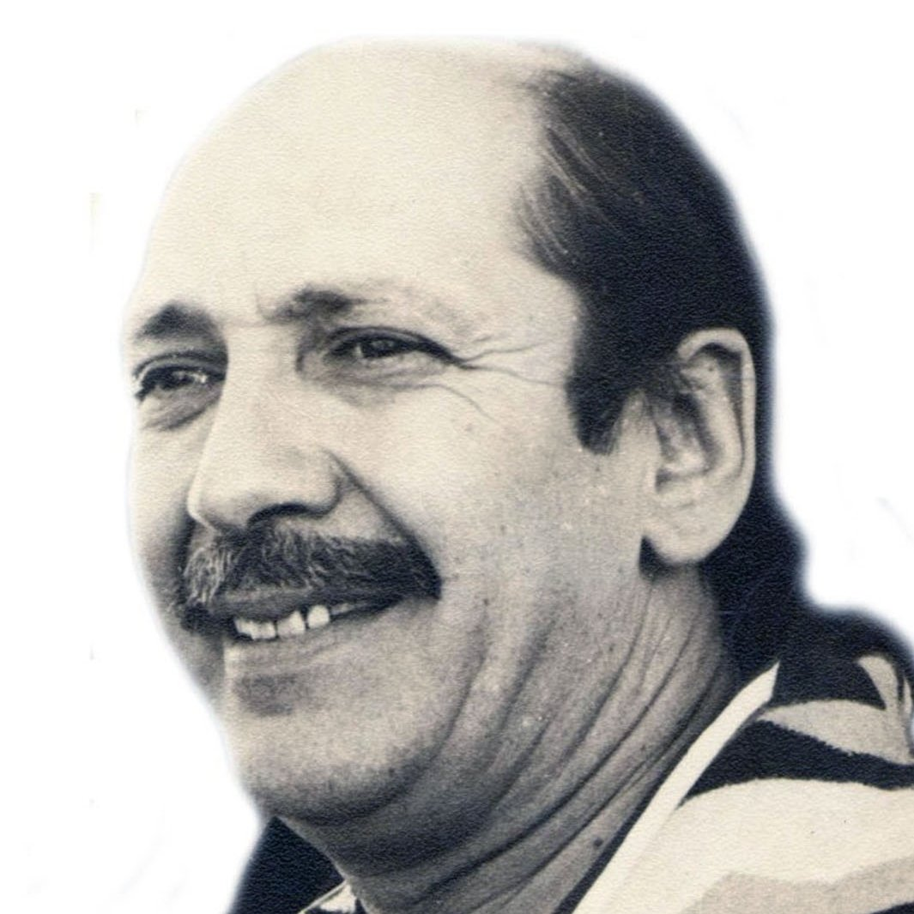
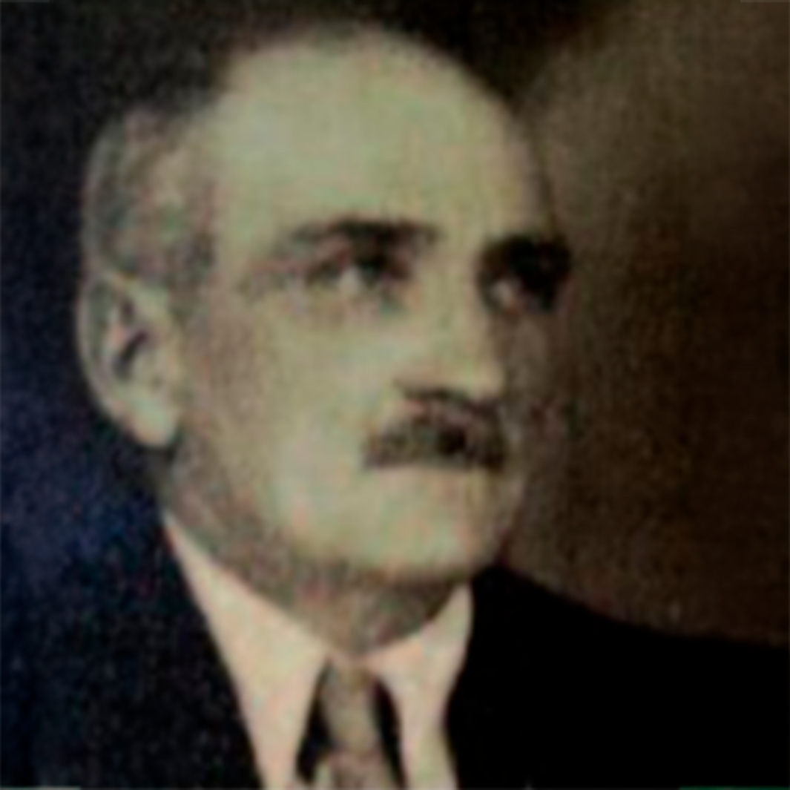

Tomás Lawson fue una figura fundamental en la historia del Club Atlético Talleres. De origen inglés, llegó a Argentina a principios del siglo XX y se convirtió en el alma mater del equipo cordobés. Fue quien, en 1913, junto a otros apasionados por el fútbol, fundó el club. Lawson no solo fue el fundador, sino también el primer presidente de Talleres, dejando una huella imborrable en la institución. Su visión y su liderazgo fueron pilares fundamentales para construir las bases de lo que hoy es uno de los clubes más importantes de Córdoba.
Amadeo Nuccetelli fue un empresario cordobés que dejó una huella imborrable en el Club Atlético Talleres. Durante sus múltiples períodos como presidente, entre los años 1974 y 1987, fue el artífice de una de las épocas más gloriosas de la institución. Su gestión se caracterizó por una visión a largo plazo y una fuerte inversión en infraestructura y en la contratación de jugadores de renombre. Nuccetelli fue el responsable de llevar a Talleres a competir en los primeros planos del fútbol argentino, consolidándolo como uno de los equipos más importantes del interior del país. Su legado trasciende más allá de los resultados deportivos. Su pasión y compromiso con el club lo convirtieron en un verdadero ídolo para la hinchada albiazul. Hoy, el Centro de Alto Rendimiento del club lleva su nombre en honor a su invaluable contribución.
Carlos Dossetti fue un presidente que generó muchisima controversia durante su gestión. Si bien es recordado por uno de los logros más importante del club, la Copa Conmebol de 1999. Su administración estuvo marcada por el endeudamiento y posterior quiebra de la institución en 2004. Además, Dossetti se vio envuelto en diversas polémicas extradeportivas, incluyendo investigaciones judiciales por presunto uso irregular de documentos y vinculaciones con casos de corrupción. Su gestión dejó una huella ambivalente en la historia de Talleres. Combinando un éxito deportivo sin precedentes con un profundo descalabro económico e institucional.
Andrés Fassi es el actual presidente de Talleres. Su gestión, que comenzó en 2014, se ha caracterizado por una fuerte reestructuración del club en todos los niveles buscando recuperar la grandeza institucional y deportiva. Fassi impulsó un proyecto integral que abarcó desde la infraestructura hasta la profesionalización de la gestión y el fortalecimiento de las divisiones inferiores. Bajo su mandato, Talleres logró el ascenso a Primera División en 2016 y se ha mantenido como un protagonista constante en el fútbol argentino clasificando a competiciones internacionales en varias ocasiones. Sin embargo, su gestión también ha tenido momentos de controversia como la reciente suspensión por parte del Tribunal de Disciplina de la AFA en 2024, tras incidentes en un partido contra Boca Juniors. A pesar de esto, Fassi es considerado una figura clave en la recuperación y el crecimiento de Talleres en los últimos años.